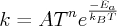

fix rx command
Syntax
fix ID group-ID rx file localTemp solver ...
- ID, group-ID are documented in fix command
- rx = style name of this fix command
- file = filename containing the reaction kinetic equations and Arrhenius parameters
- localTemp = none,lucy = no local temperature averaging or local temperature defined through Lucy weighting function
- solver = lammps_rk4 = Explicit 4th order Runge-Kutta method
- minSteps = # of steps for rk4 solver
Examples
fix 1 all rx kinetics.rx none lammps_rk4
fix 1 all rx kinetics.rx none lammps_rk4 1
fix 1 all rx kinetics.rx lucy lammps_rk4 10
Description
Fix rx solves the reaction kinetic ODEs for a given reaction set that is defined within the file associated with this command.
For a general reaction such that
the reaction rate equation is defined to be of the form

In the current implementation, the exponents are defined to be equal to the stoichiometric coefficients. A given reaction set consisting of n reaction equations will contain a total of m species. A set of m ordinary differential equations (ODEs) that describe the change in concentration of a given species as a function of time are then constructed based on the n reaction rate equations.
The ODE systems are solved over the full DPD timestep dt using a 4th order Runge-Kutta rk4 method with a fixed step-size h, specified by the lammps_rk4 keyword. The number of ODE steps per DPD timestep for the rk4 method is optionally specified immediately after the rk4 keyword. The ODE step-size is set as dt/num_steps. Smaller step-sizes tend to yield more accurate results but there is not control on the error.
The filename specifies a file that contains the entire set of reaction kinetic equations and corresponding Arrhenius parameters. The format of this file is described below.
There is no restriction on the total number or reaction equations that are specified. The species names are arbitrary string names that are associated with the species concentrations. Each species in a given reaction must be preceded by it’s stoichiometric coefficient. The only delimiters that are recognized between the species are either a + or = character. The = character corresponds to an irreversible reaction. After specifying the reaction, the reaction rate constant is determined through the temperature dependent Arrhenius equation:
where A is the Arrhenius factor in time units or concentration/time units, n is the unitless exponent of the temperature dependence, and E_a is the activation energy in energy units. The temperature dependence can be removed by specifying the exponent as zero.
The internal temperature of the coarse-grained particles can be used in constructing the reaction rate constants at every DPD timestep by specifying the keyword none. Alternatively, the keyword lucy can be specified to compute a local-average particle internal temperature for use in the reaction rate constant expressions. The local-average particle internal temperature is defined as:

where the Lucy function is expressed as:

The self-particle interaction is included in the above equation.
The format of a tabulated file is as follows (without the parenthesized comments):
# Rxn equations and parameters (one or more comment or blank lines)
1.0 hcn + 1.0 no2 = 1.0 no + 0.5 n2 + 0.5 h2 + 1.0 co 2.49E+01 0.0 1.34 (rxn equation, A, n, Ea)
1.0 hcn + 1.0 no = 1.0 co + 1.0 n2 + 0.5 h2 2.16E+00 0.0 1.52
...
1.0 no + 1.0 co = 0.5 n2 + 1.0 co2 1.66E+06 0.0 0.69
A section begins with a non-blank line whose 1st character is not a “#”; blank lines or lines starting with “#” can be used as comments between sections.
Following a blank line, the next N lines list the N reaction equations. Each species within the reaction equation is specified through its stoichiometric coefficient and a species tag. Reactant species are specified on the left-hand side of the equation and product species are specified on the right-hand side of the equation. After specifying the reactant and product species, the final three arguments of each line represent the Arrhenius parameter A, the temperature exponent n, and the activation energy Ea.
Note that the species tags that are defined in the reaction equations are used by the fix eos/table/rx command to define the thermodynamic properties of each species. Furthermore, the number of species molecules (i.e., concentration) can be specified either with the set command using the “d_” prefix or by reading directly the concentrations from a data file. For the latter case, the read_data command with the fix keyword should be specified, where the fix-ID will be the “fix rx`ID with a <SPECIES”>`_ suffix, e.g.
fix foo all rx reaction.file ... read_data data.dpd fix foo_SPECIES NULL Species
Restrictions
This command is part of the USER-DPD package. It is only enabled if LAMMPS was built with that package. See the Making LAMMPS section for more info.
This command also requires use of the atom_style dpd command.
This command can only be used with a constant energy or constant enthalpy DPD simulation.